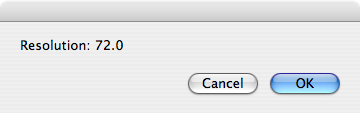
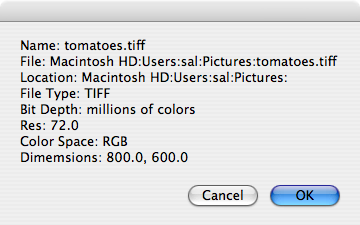

Image Properties
Like all scriptable objects, images have properties that define them, such as their dimensions, their color space, and their resolution. The image class of the Image Suite of the Image Events dictionary contains these and other properties:
bit depth (enumeration) [r/o] sixteen colors/color/four grays/black & white/thousands of colors/grayscale/two hundred fifty six grays/four colors/sixteen grays/millions of colors/best/two hundred fifty six colors/millions of colors plus
--> bit depth of the image's color representation
color space (enumeration) [r/o] Eight channel/Eight color/Five channel/Five color/Seven channel/RGB/Lab/XYZ/Six channel/CMYK/Six color/Seven color/Named/Gray
--> color space of the image's color representation
dimensions (list) [r/o] ex: {768, 1024]
--> The width and height of the image, respectively, in pixels, as a pair of integers
file type (enumeration) [r/o] PICT/Photoshop/BMP/QuickTime Image/GIF/JPEG/MacPaint/JPEG2/SGI/PSD/TGA/Text/PDF/PNG/TIFF
--> The file type of the image's file
image file (disk item reference) [r/o]
--> The file that contains the image
location (disk item reference) [r/o]
--> The directory containing the image file
name (Unicode text) [r/o]
--> The name of the image file
resolution (list) [r/o] ex: {72, 72}
--> The pixel density of the image, in dots per inch, as a pair of integers
You can access these read-only properties easily using the Image Events application.
IMPORTANT: The file formats supported by Image Events for reading an image are: PICT, Photoshop, BMP, QuickTime Image, GIF, JPEG, MacPaint, JPEG2, SGI, PSD, TGA, Text, PDF, PNG, and TIFF.
IMPORTANT: The supported file formats for saving an image with the Image Events application are: JPEG2, TIFF, JPEG, PICT, BMP, PSD, PNG, and QuickTime Image.
Getting the Properties of an Image
To extract the value of the property of an image, your script must contain the following steps:
- Start the Image Events application using the launch verb. Do not use the activate verb as the Image Events application has no user interface and runs invisibly.
- A file reference to the target image must be passed to the open command within an Image Events tell block. Doing so will load the image data from the image file. Once the image data has been successfully accessed, the script will return a reference to the opened image which can be stored in variable for use elsewhere in the script.
- The value of the properties of the loaded image can be extracted.
- The image data is purged from memory by using the close command targeting the opened image data.
Here's an example script that extracts the value of a single image property, using the procedures outlined above:
 When the script is executed, it will display a dialog containing the image resolution for the chosen image:
When the script is executed, it will display a dialog containing the image resolution for the chosen image:
set this_file to choose file
try
tell application "Image Events"
-- start the Image Events application
launch
-- open the image file
set this_image to open this_file
-- extract the property value
copy the resolution of this_image to {H_res, V_res}
-- purge the open image data
close this_image
end tell
display dialog "Resolution: " & (H_res as string)
on error error_message
display dialog error_message
end try

Use the same steps, outlined in the previous script, when designing all of your Image Events scripts.
The Properties Record
The properties of an image can be queried individually as shown in the previous script, or extracted together by getting the value of the properties property, which is returned as an AppleScript record, a comma-delimited list of key-value pairs each with a property and its corresponding value delimited by a colon character:
{ bit depth : millions of colors, file type : JPEG, image file : file "Macintosh HD:Users:sal:Slide.jpg" of application "Image Events", location : folder "Macintosh HD:Users:sal:" of application "Image Events", resolution : {100.0, 100.0}, class : image, dimensions : {1024.0, 768.0}, name : "Slide.jpg", color space : RGB }
In a script, it is faster to extract the property values from the properties record than to query the Image Events application for each property.
 Here's a script that uses the information stored in a properties record to display a dialog containing the property values for a chosen image:
Here's a script that uses the information stored in a properties record to display a dialog containing the property values for a chosen image:
set this_file to choose file
try
tell application "Image Events"
-- start the Image Events application
launch
-- open the image file
set this_image to open this_file
-- extract the properties record
set the props_rec to the properties of this_image
-- purge the open image data
close this_image
-- extract the property values from the record
set the image_info to ""
set the image_info to the image_info & ¬
"Name: " & (name of props_rec) & return
set the image_info to the image_info & ¬
"File: " & (path of image file of props_rec) & return
set the image_info to the image_info & ¬
"Location: " & (path of location of props_rec) & return
set the image_info to the image_info & ¬
"File Type: " & (file type of props_rec) & return
set the image_info to the image_info & ¬
"Bit Depth: " & (bit depth of props_rec) & return
set the image_info to the image_info & ¬
"Res: " & item 1 of (resolution of props_rec) & return
set the image_info to the image_info & ¬
"Color Space: " & (color space of props_rec) & return
copy (dimensions of props_rec) to {x, y}
set the image_info to the image_info & ¬
"Dimemsions: " & x & ", " & y
end tell
display dialog image_info
on error error_message
display dialog error_message
end try

Converting File References
Note that in the previous script, the value of the image file and location properties required additional handling to convert them into a text string. By default, these properties return file references, such as:
file "Macintosh HD:Users:sal:Slide.jpg" of application "Image Events"
An Image Events file reference cannot be coerced into a string by using the as string coercion:
image file of the props_rec as string
--> "Can't make file \"Macintosh HD:Users:sal:Slide.jpg\" of application \"Image Events\" into type string."
To convert an Image Events file reference to a text path, access either the path of the file reference or the POSIX path of the file reference.
The first returns an HFS colon-delineated path:
path of image file of props_rec
-->"Macintosh HD:Users:sal:Slide.jpg"
and the second returns a UNIX slash-delineated path:
POSIX path of image file of props_rec
--> "/Users/sal/Slide.jpg"